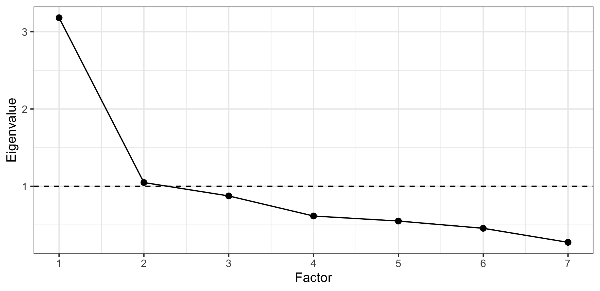

library(ggplot2)
library(dplyr)
library(psych)
swe <- readRDS("data/swe.rds")10 Factor analysis
Last week ended with an 8×8 correlation matrix that had an obvious structure in it. This week is about what to do with a structure like that.
psych is the standard R package for this. Install it once with install.packages("psych").
10.1 The problem
The survey asked how much respondents trust seven institutions: parliament, the government, the judiciary, scientists, political parties, traditional media and social media. Each is a four-point scale, and we reversed them all so that a larger number means more trust.
That gives seven variables. But do we have seven things?
Almost certainly not. Somebody who trusts parliament probably trusts the government too. If most of what those seven questions measure is one underlying disposition — call it trust in institutions — then treating them as seven separate variables is both wasteful and misleading: put all seven into a regression and they will fight each other for the same explanatory work.
Factor analysis asks whether a set of measured variables can be accounted for by a smaller number of unobserved ones.
10.2 Look at the correlations first
The same rule as always.
trust_items <- swe |>
select(tr_parl, tr_govt, tr_court, tr_sci, tr_party, tr_media, tr_socmed)
names(trust_items) <- c(
"Parliament", "Government", "Judiciary", "Scientists",
"Parties", "Media", "Social media"
)
round(cor(trust_items, use = "pairwise.complete.obs"), 2)## Parliament Government Judiciary Scientists Parties Media
## Parliament 1.00 0.72 0.55 0.30 0.51 0.40
## Government 0.72 1.00 0.53 0.32 0.53 0.38
## Judiciary 0.55 0.53 1.00 0.38 0.37 0.40
## Scientists 0.30 0.32 0.38 1.00 0.23 0.35
## Parties 0.51 0.53 0.37 0.23 1.00 0.35
## Media 0.40 0.38 0.40 0.35 0.35 1.00
## Social media 0.06 0.10 0.04 0.05 0.23 0.17
## Social media
## Parliament 0.06
## Government 0.10
## Judiciary 0.04
## Scientists 0.05
## Parties 0.23
## Media 0.17
## Social media 1.00Nearly everything correlates positively with nearly everything, which is what a single common dimension looks like. Parliament and government are at 0.72.
One column stands out. Social media correlates with the rest at around 0.1 to 0.2 — much weaker than anything else in the table. Hold that thought.
10.3 What a factor is
The idea is that the correlations between the measured variables are produced by something they have in common.
Imagine a disposition — a general willingness to trust institutions — that varies between people. Someone high on it answers all seven questions a bit more positively. Someone low on it answers them all a bit more negatively. That common influence is what makes the answers correlate.
The unobserved disposition is the factor. Factor analysis works backwards from the correlations to estimate it.
Two quantities describe the result.
A loading is the correlation between a measured variable and the factor. It says how much that item reflects the underlying thing. Loadings run from −1 to +1, and by convention anything below about 0.3 is treated as not really loading at all.
Variance explained is how much of the total variation in the items the factor accounts for.
Factor analysis is not causal discovery. It finds that some variables move together and summarises that. Whether the common thing is a real psychological disposition, an artefact of how the questions were worded, or a tendency to agree with anything, the arithmetic cannot tell you. That judgement is yours.
10.4 Is it worth doing?
Two standard checks, both quick.
Bartlett’s test, run by cortest.bartlett(), asks whether the correlation matrix differs from one with no correlations at all. If it does not, there is nothing to factor.
cortest.bartlett(
cor(trust_items, use = "pairwise.complete.obs"),
n = sum(complete.cases(trust_items))
)## $chisq
## [1] 5193.501
##
## $p.value
## [1] 0
##
## $df
## [1] 21n has to be supplied because the function is given a correlation matrix rather than the raw data, and a correlation matrix does not know how many people it came from.
The p-value is essentially zero, so the variables are correlated. With this much data that test almost always passes, and it is a floor rather than a recommendation.
The KMO measure is more useful. It asks how much of the correlation between variables is shared rather than specific to pairs.
KMO(trust_items)$MSA## [1] 0.8220836MSA stands for measure of sampling adequacy. Above 0.8 is good, above 0.6 acceptable, below 0.5 means do not bother. 0.82 is fine.
KMO() also reports a value per item, which is worth a look when one item is suspect:
round(KMO(trust_items)$MSAi, 2)## Parliament Government Judiciary Scientists Parties Media
## 0.78 0.79 0.87 0.85 0.86 0.87
## Social media
## 0.60Social media again, at the bottom.
10.5 How many factors?
The awkward question, and the honest answer is that the standard criteria disagree with each other.
An eigenvalue measures how much variance a potential factor accounts for, in units where each individual item contributes 1. eigen() computes them from a correlation matrix, and the ones we want are in the $values part of what it returns.
trust_cor <- cor(trust_items, use = "pairwise.complete.obs")
eigen_values <- eigen(trust_cor)$values
round(eigen_values, 3)## [1] 3.181 1.048 0.875 0.615 0.550 0.456 0.274The first is 3.18 — worth more than three items on its own. The second is 1.05, and everything after that is below 1.
Three ways to read that.
The Kaiser criterion: keep factors with an eigenvalue above 1, on the logic that a factor should at least explain more than one item does. That gives 2 here. It is the crudest rule and it tends to keep too many.
The scree plot: plot the eigenvalues in order and look for the elbow. seq_along() below makes the sequence 1, 2, 3, … as long as the vector it is given, which numbers the factors; geom_hline() marks the value 1 with yintercept, and linetype = "dashed" makes it a dashed line so that it reads as a reference rather than as data.
scree_data <- data.frame(
factor = seq_along(eigen_values),
eigenvalue = eigen_values
)
ggplot(scree_data, aes(x = factor, y = eigenvalue)) +
geom_line() +
geom_point(size = 2) +
geom_hline(yintercept = 1, linetype = "dashed") +
scale_x_continuous(breaks = 1:7) +
labs(
x = "Factor",
y = "Eigenvalue"
) +
theme_bw()
The drop from the first to the second is large, and after the second the line is nearly flat. The elbow is at two, which suggests keeping one — the factors before the elbow.
Parallel analysis, run by fa.parallel(), is the best of the three. It generates random data of the same size and shape, factors that, and keeps only the factors that do better than random noise would.
parallel <- fa.parallel(trust_items, fa = "fa", plot = FALSE)parallel$nfact## [1] 33 factors by that criterion.
So: Kaiser says 2, the scree plot suggests one, parallel analysis says 3. This is normal.
The criteria are advice, not answers. The real test is whether a solution is interpretable — whether the groups of items that hang together correspond to something you can name and defend. A statistically defensible solution you cannot explain is worse than a simpler one you can.
10.6 One factor
Start simple, with one.
one_factor <- fa(trust_items, nfactors = 1, fm = "ml")
one_factor$loadings##
## Loadings:
## ML1
## Parliament 0.839
## Government 0.836
## Judiciary 0.657
## Scientists 0.412
## Parties 0.616
## Media 0.507
## Social media 0.131
##
## ML1
## SS loadings 2.659
## Proportion Var 0.380fa() is the workhorse. nfactors is how many to extract, and fm = "ml" is the estimation method — maximum likelihood, which is a reasonable default and gives you a significance test if you want one.
Read the loadings. Parliament (0.84) and government (0.84) load strongly: they are the clearest expressions of the underlying disposition. Judiciary and parties are solid. Scientists and media are weaker but real.
And social media, at 0.13, does not load at all.
Proportion Var says the factor accounts for 38.0% of the total variance in the seven items.
10.6.1 The item that does not belong
A loading of 0.13 is a finding, not a nuisance. Trust in social media is not part of the same disposition as trust in institutions. On reflection that is obvious: social media is not an institution people are asked to have confidence in, and the question is probably measuring something closer to media habits.
Drop it and refit.
trust_six <- trust_items |>
select(-`Social media`)
six_factor <- fa(trust_six, nfactors = 1, fm = "ml")
six_factor$loadings##
## Loadings:
## ML1
## Parliament 0.841
## Government 0.836
## Judiciary 0.658
## Scientists 0.412
## Parties 0.612
## Media 0.505
##
## ML1
## SS loadings 2.639
## Proportion Var 0.440Backticks around `Social media` are needed because the name contains a space. This is why short names without spaces are worth the trouble.
Every item now loads above 0.4, and the variance explained rises to 44.0%.
10.7 Reliability
A related question: if these six items are meant to measure one thing, how consistently do they do it?
Cronbach’s alpha is the standard measure. Roughly, it is how much the items agree with each other, on a scale where 1 is perfect.
alpha_result <- psych::alpha(trust_six)alpha_result$total$raw_alpha## [1] 0.8127142psych::alpha() is written out with its package name because several packages define a function called alpha, and whichever you loaded last wins.
0.813. The rough conventions are 0.7 acceptable, 0.8 good, 0.9 excellent — though above about 0.95 the items are probably redundant rather than reliable.
With all seven items, including social media, alpha was 0.780. Dropping the item that did not fit made the scale more reliable, not less.
Alpha rises automatically as you add items, so a long scale can post a respectable alpha while measuring several different things. It is a check on a one-dimensional scale, which is why it comes after the factor analysis rather than instead of it.
10.8 Making a variable
The practical payoff. Instead of six trust variables, we want one.
swe$trust <- six_factor$scores[, 1]
summary(swe$trust)## Min. 1st Qu. Median Mean 3rd Qu. Max. NAs
## -3.021686 -0.460606 0.078510 0.009536 0.420305 1.929368 297scores holds one factor score per respondent — an estimate of where each person sits on the underlying dimension. It comes out standardised, so a mean of about 0 and a standard deviation of about 1. Negative means less trusting than average.
Check the alignment.
fa()returns as many rows as you gave it, withNAwhere a respondent was missing on any item. That meansswe$trust <- six_factor$scores[, 1]is correct. What is not correct is trying to be clever and assigning only into the complete rows — the lengths then do not match, R recycles, and everybody gets somebody else’s score.The reason to be careful is that the broken version does not look broken. Writing this chapter, a misaligned version of exactly this variable produced differences between parties of a few hundredths of a point, which reads as a perfectly plausible finding of “no real differences”. Always check a new variable against something you already know.
So check it.
swe |>
filter(!is.na(vote)) |>
group_by(vote) |>
summarise(
n = n(),
mean_trust = round(mean(trust, na.rm = TRUE), 2)
)## # A tibble: 8 × 3
## vote n mean_trust
## <fct> <int> <dbl>
## 1 V 138 0.01
## 2 MP 150 0.42
## 3 S 820 0.26
## 4 C 172 0.32
## 5 L 145 0.18
## 6 KD 133 -0.01
## 7 M 440 0.05
## 8 SD 336 -0.49Sweden Democrat voters are by some distance the least trusting, at -0.49. Green, Centre and Social Democrat voters are the most trusting. That is a recognisable pattern, and it did not go into the factor analysis — vote choice was never in the model.
A second check, against variables that should be related:
cor(swe$trust, swe$satdem, use = "complete.obs")## [1] 0.5279259cor(swe$trust, swe$demlevel, use = "complete.obs")## [1] 0.5489028Strongly correlated with satisfaction with democracy and with how democratic people think Sweden is, as it should be — but nowhere near 1, so it is not simply the same variable again. (Satisfaction with democracy has only four categories, so a Pearson correlation is being stretched here; as a rough check on whether a new variable behaves sensibly, that is a reasonable use of it.)
From here trust is an ordinary continuous variable. It goes into a regression in session 11 like any other.
10.9 When there is more than one dimension
So far we have asked the six items to be one thing, and they were willing. But “willing” is not the same as “best described that way”.
The criteria are split again. Look at the eigenvalues of the six-item set, and at what parallel analysis makes of them.
parallel_six <- fa.parallel(trust_six, fa = "fa", plot = FALSE)six_cor <- cor(trust_six, use = "pairwise.complete.obs")
six_eigen <- eigen(six_cor)$values
round(six_eigen, 2)## [1] 3.15 0.88 0.65 0.59 0.46 0.28parallel_six$nfact## [1] 2The Kaiser rule says one, since the second eigenvalue is 0.88 and so below the threshold. Parallel analysis says 2.
There is also a reason to look beyond the criteria. Research on political trust distinguishes trust in the institutions of party politics — parliament, government, parties — from trust in institutions that hold authority without standing for election. If that distinction is present in these answers, one factor would be hiding it.
So try two, and see whether the split falls where theory says it should.
two_factors <- fa(
trust_six,
nfactors = 2,
rotate = "oblimin",
fm = "ml"
)
print(two_factors$loadings, cutoff = 0.3)##
## Loadings:
## ML1 ML2
## Parliament 0.847
## Government 0.865
## Judiciary 0.384 0.377
## Scientists 0.657
## Parties 0.574
## Media 0.494
##
## ML1 ML2
## SS loadings 1.969 0.821
## Proportion Var 0.328 0.137
## Cumulative Var 0.328 0.465cutoff = 0.3 hides the small loadings so that the pattern is visible. rotate = "oblimin" needs explaining, and does so below.
The split is not arbitrary. The first factor is parliament, government and parties — the institutions of party politics, the ones you vote for and against. The second is scientists and the media — institutions with authority but no electoral role.
That distinction is a real one in the research on political trust, and it did not have to appear here. It is the sort of result that makes a two-factor solution worth taking seriously.
The judiciary is the interesting case: 0.38 on one factor and 0.38 on the other. An item that loads about equally on two factors is called a cross-loading, and it is telling you something — the courts are political and non-political at once, which is more or less what a constitutional court is for.
10.9.1 Rotation
When you extract more than one factor, the solution is not unique. Several different sets of axes describe the same data equally well, in the way that a set of points can be described from more than one angle. Rotation picks the angle that is easiest to interpret, by trying to make each item load strongly on one factor and weakly on the rest.
The choice that matters is whether the factors are allowed to correlate.
- Orthogonal rotations, of which
varimaxis the common one, force the factors to be uncorrelated. - Oblique rotations, such as
oblimin, allow them to correlate.
Look at what our factors actually do.
round(two_factors$Phi, 3)## ML1 ML2
## ML1 1.000 0.661
## ML2 0.661 1.000Phi holds the correlations between the factors: 0.66. People who trust parliament also tend to trust scientists. That is not a nuisance, it is the finding — there is a general trusting disposition, and two more specific ones on top of it.
Now force them apart and see what it costs.
orthogonal <- fa(
trust_six,
nfactors = 2,
rotate = "varimax",
fm = "ml"
)
round(unclass(orthogonal$loadings), 3)## ML1 ML2
## Parliament 0.793 0.303
## Government 0.801 0.287
## Judiciary 0.491 0.490
## Scientists 0.169 0.591
## Parties 0.555 0.253
## Media 0.307 0.514unclass() strips the special printing that psych attaches to a loadings table, so that every number shows rather than only the large ones. And the clean structure has gone. Under varimax the judiciary loads 0.49 and 0.49, parliament picks up a loading of 0.30 on the second factor, and almost everything loads moderately on both. Because the rotation is not allowed to put the correlation between the factors, it has to put it into the loadings instead — and the result describes the data less well while looking more complicated.
For social science, oblique is nearly always the right default. Real underlying dimensions are seldom independent of each other, and
varimaxproduces a tidy-looking solution by asserting something about the world that is usually false. If the factors genuinely are uncorrelated, an oblique rotation will report a correlation near zero and you have lost nothing.
10.9.2 One factor or two?
Both solutions are defensible fits to the same six items.
The one-factor solution says there is a general disposition to trust institutions, and it explains 44.0% of the variance. The two-factor solution says that disposition has two related parts, political and non-political, correlated at 0.66.
Which you take depends on what you are going to do with it. If you want one variable for a regression, take one factor — the two are correlated at 0.66 anyway, and separating them buys little. If your argument is specifically about the difference between trust in politicians and trust in expertise, take two, and say why.
A question. The criteria gave three different answers about the number of factors, and both solutions are interpretable.
Suppose you fitted one factor, and a reviewer says you should have fitted two. What evidence could you offer in reply — and is “parallel analysis suggested three” a point in your favour or against you?
10.10 What it assumes
Continuous items, or close enough. Our trust items are four-point scales, which is below the five-category rule from session 2. This is extremely common practice and it is a real compromise; psych offers cor = "poly" to treat items as ordinal, which is the more defensible route for short scales.
Enough cases. The usual advice is at least 10 per item, and more for weak loadings. With 2548 complete cases on six items, we are not short.
Linear relationships, since the whole thing is built on a correlation matrix — with everything that implies about what correlations miss.
How to write it up.
The six institutional trust items were subjected to maximum likelihood factor analysis. Sampling adequacy was good (KMO = 0.83) and Bartlett’s test was significant (p < .001). A single factor was retained, accounting for 44.0% of the variance, with loadings from 0.41 (scientists) to 0.84 (parliament). Internal consistency was good (α = 0.81). A seventh item, trust in social media, loaded at 0.13 and was excluded. Factor scores were saved for use in the models below.
Say which items, which method, how many factors and why, the loadings, the variance explained, and what you did with the result. Mistakes to avoid:
- Not saying which rotation you used, or using an orthogonal one without justifying it.
- Reporting the number of factors without the reasoning. The criteria disagree; say which you followed.
- Hiding a dropped item. Report it and say why it went.
- Reporting alpha instead of a factor analysis. Alpha assumes one dimension; it does not test for it.
- Naming a factor after what you hoped to find rather than after the items that actually load on it.
- Treating factor scores as if they were measured without error. They are estimates, and the uncertainty does not carry into the next model.
- Running the analysis on items with different scale directions. Reverse them first, or the factor will split into “agree” and “disagree” and mean nothing.
In the seminar. swirl lesson 10, Factor Analysis. Checking whether a set of items hangs together, deciding how many factors, reading loadings, reliability, and saving factor scores. Around 30 minutes.